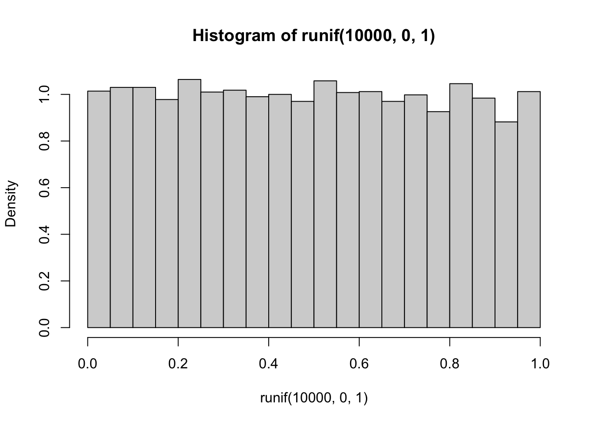
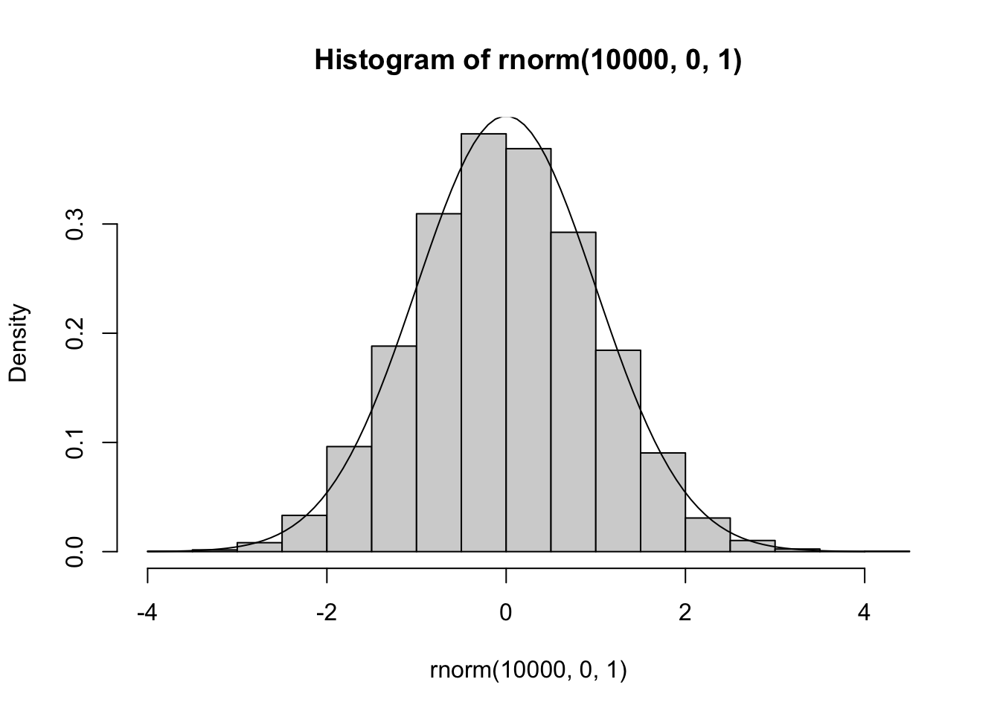
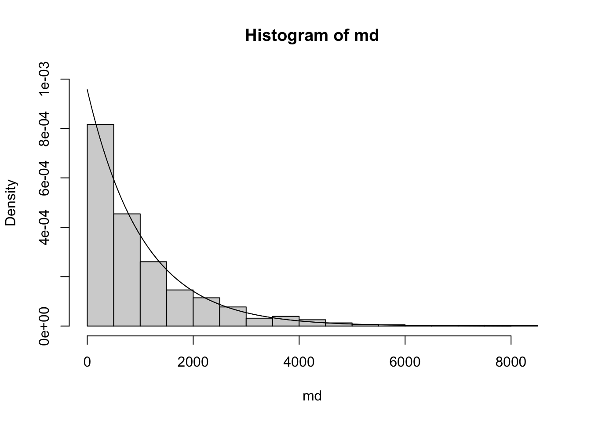
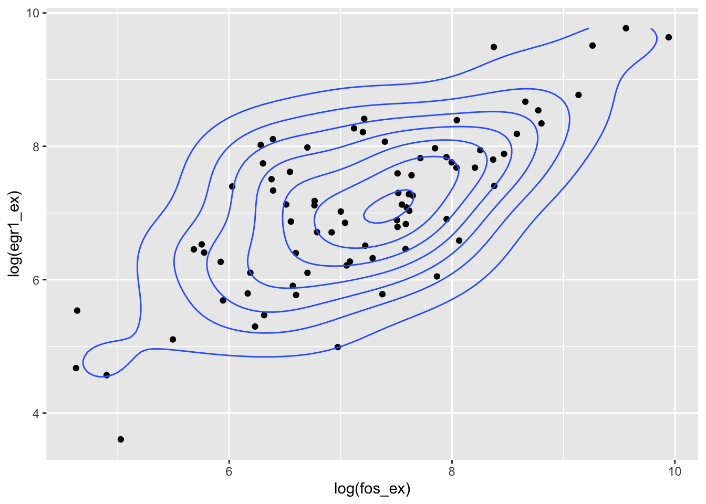

S1_probability: Definitions and exercises
Vincent J. Carey, stvjc at channing.harvard.edu
July 01, 2022
Source:vignettes/S1_probability.Rmd
S1_probability.RmdLearning objectives
- Gain familiarity with concepts of simulation in R using sampling from
specified sets (e.g., a deck of cards) and using random number generation
- understand the use of
sample() - understand how to use
set.seed()to control the behavior of random number generation
- understand the use of
- Estimate event probabilities for specified experimental setups
- distinguish the sample size of an experiment and the replication size of a simulation
- Explain the relationship between precision of a probability estimate and the sample size of the associated experiment
- Define and use probability mass functions for discrete outcomes
- for binomially distributed outcomes
- for outcomes governed by the Poisson and Negative Binomial models
- in general
- Understand how to simulate data under null (e.g., fair deck) and alternative (e.g., biased deck) conditions
- Understand the difference between finite, countably infinite, and uncountably infinite sample spaces
- Define and use probability density functions and cumulative distribution functions for continuous outcomes
Overview
Our concept of probability is that of “long run relative frequency”.
We’ll work with several models of random events to make this more concrete.
The probability of a 0-1 (binary or dichotomous) event
Simulating shuffled playing cards
Random permutations with sample()
We’ll take for granted that sample(x, size=length(x), replace=FALSE) in R
achieves a goal of “shuffling” elements of x. Thus we assume that,
if x is a vector in R, and
s1 = sample(x, size=length(x), replace=FALSE)
s2 = sample(x, size=length(x), replace=FALSE)then no aspect of the ordering of elements in
s1 can be used to predict anything about the ordering of elements of s2.
In other words, sample(x, size, replace=FALSE) is taken as a primitive operation
that permutes the elements of x in a “random” way.
set.seed(5432) # initialize, for reproducibility, the random number generator
sample(1:5, replace=FALSE) # permute (1,2,3,4,5)## [1] 4 2 1 3 5
sample(1:5, replace=FALSE) # a new, unpredictable, permutation## [1] 3 4 1 2 5Card deck definitions and operations
Our card deck is a vector with 52 elements. Unicode characters encode the “suits”.
If you have not already installed CSHstats (or did so a long time ago) use
BiocManager::install("vjcitn/CSHstats") # install.packages("BiocManager") if necessaryto get access to the software needed to do the computations in this document.
library(CSHstats)
d = build_deck()
d## [1] "2 ♡" "3 ♡" "4 ♡" "5 ♡" "6 ♡" "7 ♡" "8 ♡" "9 ♡" "10 ♡" "J ♡"
## [11] "Q ♡" "K ♡" "A ♡" "2 ♢" "3 ♢" "4 ♢" "5 ♢" "6 ♢" "7 ♢" "8 ♢"
## [21] "9 ♢" "10 ♢" "J ♢" "Q ♢" "K ♢" "A ♢" "2 ♣" "3 ♣" "4 ♣" "5 ♣"
## [31] "6 ♣" "7 ♣" "8 ♣" "9 ♣" "10 ♣" "J ♣" "Q ♣" "K ♣" "A ♣" "2 ♤"
## [41] "3 ♤" "4 ♤" "5 ♤" "6 ♤" "7 ♤" "8 ♤" "9 ♤" "10 ♤" "J ♤" "Q ♤"
## [51] "K ♤" "A ♤"## [1] "♡" "♢" "♣" "♤"## [1] "2" "3" "4" "5" "6" "7" "8" "9" "10" "J" "Q" "K" "A"##
## 10 2 3 4 5 6 7 8 9 A J K Q
## ♡ 1 1 1 1 1 1 1 1 1 1 1 1 1
## ♢ 1 1 1 1 1 1 1 1 1 1 1 1 1
## ♣ 1 1 1 1 1 1 1 1 1 1 1 1 1
## ♤ 1 1 1 1 1 1 1 1 1 1 1 1 1A fair deck has one card for each combination of “face” and “suit”.
Shuffling the deck
A reproducible shuffling event can be programmed as follows:
set.seed(1234) # any numeric seed will do but you need to record it
shuffle_deck = function(d) sample(d, size=length(d), replace=FALSE)
head(d) # top 6 cards## [1] "2 ♡" "3 ♡" "4 ♡" "5 ♡" "6 ♡" "7 ♡"
head(shuffle_deck(d))## [1] "3 ♣" "4 ♢" "10 ♢" "Q ♣" "6 ♤" "9 ♤"The top card after a shuffle
set.seed(4141)
top_draw = function(d) shuffle_deck(d)[1]
top_draw(d)## [1] "A ♤"
top_draw(d)## [1] "5 ♤"Estimating the probability of an event
A simulation process: repeated shuffles and draws
Here’s a simple way of estimating the probability that the top draw of a shuffled fair deck is a heart, construed as long run frequency.
We’ll simulate 100 shuffles and save the results of testing the suit of the top card.
heart_sign = function() "\U2661" # unicode U2661, prepend backslash
heart_sign()## [1] "♡"
res = rep(NA, 100)
for (i in 1:100) {
res[i] = (suits(top_draw(d)) == heart_sign()) # TRUE if top card is a heart
}
head(res)## [1] FALSE FALSE TRUE TRUE TRUE FALSE## [1] 0.36A more concise approach with R is:
## [1] 0.22Replicating the estimation process
Let’s intensify our investigation with an aim of understanding the uncertainty of estimation.
We’ll define a variable that gives the size of our “experiment”: we are shuffling
100 times and we’ll refer to this as the sample size, SSIZE
SSIZE = 100We will study the estimation procedure by replicating the experiment N_REPLICATION times.
N_REPLICATION = 500
set.seed(10101) # initialize, for reproducibility, the random number generator
doubsim = replicate(N_REPLICATION,
mean(replicate( SSIZE, suits(top_draw(d)) == heart_sign()) )
)
Exercises
8: How can we make the estimate of the probability of the event “suit of top card is ‘heart’” more precise?
Answer: increase SSIZE.
SSIZE = 500
set.seed(101012)
doubsim2 = replicate(N_REPLICATION,
mean(replicate( SSIZE, suits(top_draw(d)) == heart_sign()) )
)With an increased “sample size”, we have reduced variation in our experiment-to-experiment estimates of the probability of heart as suit of top card.
Formal probability models
Intuitively, the probability of drawing a heart from a well-shuffled fair deck is 1/4. If we repeat the shuffling and drawing one hundred times, we expect around 25 draws to reveal a heart.
Formal probability models enable us to reason systematically about what we mean by around in our description of our expectation. With these models we can also create accurate predictions of likely outcomes in more complex events.
It is useful to define the sample space for a probability model, which is the set of all possible outcomes of the random process being modeled. For our top-card-drawn example, the sample space is the set of suits, because we disregard the face value. For the fair deck, each point in the sample space has probability \(1/4\). Events of interest are “top card is a heart” and “top card is not a heart”. The probabilities of these events are derivable from the probabilities of the constituent outcomes.
Using the binomial probability model
A series of independent dichotomous events (true or false, zero or one, heart or non-heart) can be modeled using a probability mass function for the binomial distribution. There are two parameters, \(p\) and \(n\), where \(p\) is the (unobservable) probability of the event (say “suit of top card is ‘heart’”) and \(n\) is the number of independent trials in which the random dichotomy is observed. In \(n\) “trials”, if the event has probability \(p\), the probability of seeing the event \(x\) times is \[ Pr(X = x; n, p) = {\binom{n}{x}} p^x(1-p)^{n-x} \] where have written \(X\) to denote the random quantity and \(x\) to denote its realization.
So for a single draw, with \(X\) the count of hearts seen in the draw, we have \[ Pr(X=0; 1, 1/4) = 1-1/4 = 3/4 \] \[ Pr(X=1; 1, 1/4) = 1/4 \]
Visualizing the model and the data
The formula given above tells us how frequently we will observe a given count. The
R function dbinom can compute the probability, which we multiply by the number
of realizations to get the height of the histogram.
hist(doubsim3, xlim=c(.15*500,.35*500),
xlab="count of draws with heart as suit of top card", ylim=c(0,115))
points(80:160, 2500*dbinom(80:160, 500, 13/52), pch=19, cex=.5)
legend(78, 110, pch=19, legend="scaled dbinom(x, 500, .25)", bty="n", cex=.85)
Notice that the histogram, by virtue of its binning of the counts, does not seem to reflect the shape of the theoretical frequency function given by the dots. This can be remedied by increasing the number of replicates used.
There is considerable research regarding the design of histogram displays.
See ?nclass.Sturges for references. One unpleasant feature of the
display for doubsim2 is that it seems to imply an asymmetric distribution.
Another is the way it “cuts off” at the extremes.
A biased deck
Recall the layout of the fair deck:
##
## 10 2 3 4 5 6 7 8 9 A J K Q
## ♡ 1 1 1 1 1 1 1 1 1 1 1 1 1
## ♢ 1 1 1 1 1 1 1 1 1 1 1 1 1
## ♣ 1 1 1 1 1 1 1 1 1 1 1 1 1
## ♤ 1 1 1 1 1 1 1 1 1 1 1 1 1We will make a copy of one card and remove one:
##
## 10 2 3 4 5 6 7 8 9 A J K Q
## ♡ 1 1 1 2 1 1 1 1 1 1 1 1 1
## ♢ 1 1 1 1 1 0 1 1 1 1 1 1 1
## ♣ 1 1 1 1 1 1 1 1 1 1 1 1 1
## ♤ 1 1 1 1 1 1 1 1 1 1 1 1 1Probability models for categorical outcomes
Thus far we have focused on the dichotomy: top draw is heart or not. We can consider all the possible suits as a 4-valued response.
A contingency table
Let’s simulate the process of drawing the top card after shuffling, and tabulate the suits observed.
##
## ♡ ♢ ♣ ♤
## 148 106 126 120Multinomial model and simulation
We adopted the binomial model for the number of top draws with suit “heart” in a fixed number of shuffles:
\[ Pr(X = x; n, p) = {\binom{n}{x}} p^x(1-p)^{n-x} \]
With the fair deck, we have \(p= 1/4\). A generalization to a vector of responses is the multinomial model. We can use this for the (ordered) vector of counts of top draws yielding different suits. For this problem we have parameters \(N\) (number of trials), \(k\) (number of categories), and \(p_1, \ldots, p_k\), the category-specific probabilities. The realizations are denoted \(x_1, \ldots, x_k\) and we have \(\sum_i x_i = N\).
Now the probability model is defined in terms of random vectors and vectors of probabilities:
\[ Pr(X_1 = x_1, \ldots, X_k = x_k) = \frac{n!}{x_1! \cdots x_k!} p_1^{x_1} \cdots p_k^{x_k} \]
This provides a more elegant way of producing frequency distributions
of the suit of the top draw. Here we introduce pseudorandom number
generation from the multinomial model, using rmultinom.
NREP = 10000
SSIZE = 500
mnmat = rmultinom(NREP, SSIZE, rep(.25,4))
rownames(mnmat) = c("\U2661", "\U2662", "\U2663", "\U2664")
mnmat[,1] # one draw## ♡ ♢ ♣ ♤
## 131 125 110 134
apply(mnmat,1,mean)## ♡ ♢ ♣ ♤
## 124.9621 124.9080 125.0362 125.0937Notice that we did not use the deck d in producing this matrix
of counts. Previously we applied sample() to the 52-vector of
cards. Now we use the model to develop the data
of interest.
Exercise
14: Modify the call to rmultinom to obtain distributions of
top card suits for the biased deck bd.
Hint: Change the part of the call involving rep().
The Poisson distribution
Modeling collections of counts
Outcomes taking the form of integer counts arise in many appications. As an example, a quarry floor is divided into squares about one meter on the side. 30 squares were searched for a fossil and the number of specimens per square is recorded. No square had 5 or more specimens. (Example from Probability Models and Applications, I. Olkin, L. Gleser, C. Derman, ch 6.3.)
The table below includes nspec, the number of specimens in
a square, freq, the number of squares having the corresponding
number of specimens, and pred, a predicted number of specimens
based on the Poisson model with mean parameter 0.73 specimens
per square.
foss = data.frame(nspec=0:4, freq=c(16,9,3,1,1), pred=round(30*dpois(0:4, 0.73), 2))
foss## nspec freq pred
## 1 0 16 14.46
## 2 1 9 10.55
## 3 2 3 3.85
## 4 3 1 0.94
## 5 4 1 0.17To derive the quantities pred, we used dpois for the counts per square,
with mean parameter set at 0.73. To derive this, we use
sum(foss$nspec * foss$freq)/30## [1] 0.7333333to obtain the average number of fossils per square. The Poisson model with mean \(\lambda\) is \[ Pr(X = x; \lambda) = \frac{e^{-\lambda}\lambda^k}{k!} \]
A countably infinite sample space
The binomial and multinomial models discussed above have finite discrete sample spaces. The sample space for the Poisson model is the set of non-negative integers. The mass function arises from the fact that \(e^\lambda = \sum \lambda^k/k!\), the sum taken over all non-negative integers.
The negative binomial model
The mass function is \[ p(x; \theta, \mu) = \frac{\Gamma(\theta + x)}{\Gamma(\theta)y!} \frac{\mu^y \theta^\theta}{(\mu + \theta)^{\theta + y}} \]
This will be useful for later material.
Mean, variance
The sample mean for the vector \(x = (x_1, \ldots, x_n)\) is defined as \(\bar{x} = n^{-1}\sum_i x_i\). The (unbiased estimator of the) sample variance is \((n-1)^{-1}\sum_i (x_i = \bar{x})^2\).
We will sometimes refer to mean and variance in the context of probability models rather than samples. The mean for a continuous distribution is defined as
For a discrete distribution with probability mass function \(p\) the mean is
\[ E(x) = \sum x p(x), \] The sum here is taken over the sample space for the associated model.
Writing \(\mu\) for the mean value of the distribution under study, the variance of a discrete distribution is \[ V(x) = \sum (x-\mu)^2 p(x) dx. \]
Models for continuous outcomes
The models we’ve considered thus far are for discrete responses – the sample space is either finite or countably infinite.
For continuous responses, the sample space is uncountably infinite. The sample space may be an interval of the real line, or the whole real line. We will discuss how to define probabilities for subsets of the sample space.
Univariate response
For concreteness, we will use RNA-seq data derived from The Cancer Genome Atlas. We’ll focus on 79 values of normalized RSEM-based estimates of expression of YY1 in adrenocortical carcinoma.
## TCGA-OR-A5J1-01A-11R-A29S-07 TCGA-OR-A5J2-01A-11R-A29S-07
## 1455.8117 1688.6318
## TCGA-OR-A5J3-01A-11R-A29S-07 TCGA-OR-A5J5-01A-11R-A29S-07
## 1821.3598 1877.6143
## TCGA-OR-A5J6-01A-31R-A29S-07 TCGA-OR-A5J7-01A-11R-A29S-07
## 634.3023 1132.3706We will refer to this as a vector of “real valued” outcomes.
Cumulative distribution function; quantiles
We’ll use capital letters to denote random variables. The formal definition of “random variable” is given in textbooks; we will use the term informally to refer to quantities we regard as random.
The function \(F(x) = \mbox{Pr}(X < x)\) is called the cumulative distribution function (CDF) for the random variable \(X\). For the YY1 measures, we can produce a visualization of the associated CDF:
The quantiles of a distribution are given by the inverse of the CDF. The quantile function takes a number \(p\) between 0 and 1 and returns the number \(F^{-1}(p)\).
The graph above shows that the 0.80 quantile of the distribution of our YY1 vector is about 1584.
Histogram, probability density function
The histogram is a tunable display of the relative frequencies of values in a vector.
par(mfrow=c(2,1), mar=c(4,3,1,1))
hist(yy1_ex, xlim=c(400, 2600))
hist(yy1_ex, breaks=20, xlim=c(400, 2600))The probability density function for a continuous random variable \(X\) satisfies
\[ \int_a^b f(x) dx = \mbox{Pr}(a < X < b) \]
We can estimate the density function for a sample in various ways. Here is a simple illustration:

It is of some interest to use approxfun and numerical
integration with the density estimate given above,
to estimate the probability that YY1
expression lies in a given interval.
## 0.4821651 with absolute error < 1e-05
mean(yy1_ex >=1000 & yy1_ex <= 1500) # empirical## [1] 0.5316456Is this acceptable? Could changing the bandwidth for the density estimator produce better results? Is there a potential overfitting problem?
Some widely used models for continuous responses
We’ll use simulation to illustrate the shapes of
various distributions. R makes this very simple with
a family of functions whose names begin with r.
Uniform distribution on [0,1]
The density function is \(f(x) = 1\) if \(x \in [0,1]\) and 0 otherwise.

Gaussian model
The Gaussian distribution is also called “normal”. Its shape and position on the real line are determined by its mean and variance. Symbolically, the model is often written \(N(\mu, \sigma^2)\), and the density function is \(f(x) = 1/\sqrt{2\pi \sigma^2} \exp\{(x-\mu)^2/2 \sigma^2\}\).

Exponential and Gamma models for survival data
The exponential model (not to be confused with exponential family models) is defined for random variables with positive values. An example is survival times. We’ll use a dataset from the survival package to illustrate.
library(survival) # use myeloma records from Mayo clinic, remove censored times
md = myeloma$futime[myeloma$death==1 & myeloma$entry == 0]
hist(md, breaks=20, prob=TRUE, ylim=c(0,.001))
mean(md)## [1] 1044.768
The density function for the exponential model is \(f(x) = \lambda e ^ {-\lambda x}\). In this formulation, \(\lambda\) is referred to as the rate parameter. The mean of the distribution is then \(1/\lambda\).
Mean and variance for continuous models
For continuous distributions, the mean value is \[ E(x) = \int x f(x) dx. \] Writing \(\mu\) for the mean value of the distribution under study, the variance of a continuous distribution is \[ V(x) = \int (x-\mu)^2 f(x) dx. \]
Multivariate response
We’ve seen that the use of univariate probability models has many facets. The concept of joint distribution of multiple random quantities is central to reasoning about interactions among components of complicated processes.
In the following example, we have obtained normalized expression measures for EGR1 and FOS in adrenocortical carcinoma tumors studied in TCGA. We’ll use built-in bivariate density estimation to show the relationship between expression of these two transcription factors in ACC.
data(fos_ex)
data(egr1_ex)
bivdf = data.frame(fos_ex, egr1_ex)
library(ggplot2)
ggplot(bivdf, aes(x=log(fos_ex), y=log(egr1_ex))) + geom_point() + geom_density_2d()
Joint cumulative distribution function
We’ll focus on the case of continuous bivariate response denoted \((X,Y)\). The joint cumulative distribution function (cdf) is \[ F(x,y) = Pr(X < x, Y < y) \] So, for log FOS and log EGR1, we can evaluate \(F(7,7)\) as follows:
## [1] 0.278481We will call this the empirical estimate of \(F(7,7)\).
Covariance matrix, bivariate case
The covariance between two random variables is \(Cov(X,Y) = EXY - (EX)(EY)\); the covariance matrix is symmetric, has the variances on the diagonal, and the covariance off the diagonal.
## [1] 1.194019## [,1] [,2]
## [1,] 1.1940188 0.9746936
## [2,] 0.9746936 1.4137188Using the bivariate normal model
Given estimates of the bivariate mean and covariance, we can use the multivariate normal cumulative density function to produce contours of the distribution that will have elliptical shapes, as opposed to the wiggly contours we saw above.
bmean = c(mean(log(fos_ex)), mean(log(egr1_ex)))
library(mvtnorm)
xgrid = seq(3,10,.05)
ygrid = seq(3,10,.05)
ngrid = length(xgrid)
nd = matrix(NA, ngrid, ngrid)
for (i in 1:ngrid) { # inefficient!
for (j in 1:ngrid) {
nd[i,j] = dmvnorm(c(xgrid[i],ygrid[j]), bmean, covmat)
}
}
contour(xgrid, ygrid, nd, ylab="log EGR1", xlab="log FOS")
points(log(fos_ex), log(egr1_ex), col="gray", pch=19)The estimate of \(F(7,7)\) using this model is
## [1] 0.3368775
## attr(,"error")
## [1] 1e-15
## attr(,"msg")
## [1] "Normal Completion"We’ll call this the model-based estimate of \(F(7,7)\).
Probabilistic independence and dependence
The “tilted contour ellipses” shown just above indicate that knowledge of the value of log FOS tells us about variation in values of log EGR1. If log FOS is 6, the value of log EGR1 is much more likely to be around 6 than it is to be around 9. We use the concept of conditional distribution to address this concept, and denote this conditional distribution function \(F(x|y)\), with the vertical bar denoting conditioning. Specifically, \(F(x|Y=y)\) = Pr(\(X<x\)) given that \(Y = y\).
Probabilistic independence of two random quantities can be formulated as the condition that \(F(x|y) = F(x)\): knowledge of the value of \(Y\) provides no information on the distribution of \(X\).
Measures of correlation
The correlation coefficient for two random quantities is the ratio of their covariance to the square root of the product of their variances.
20: Use the elements of covmat computed above to produce an estimate of the correlation between log FOS and log EGR1, and compare to cor() in R for (log FOS, log EGR1).